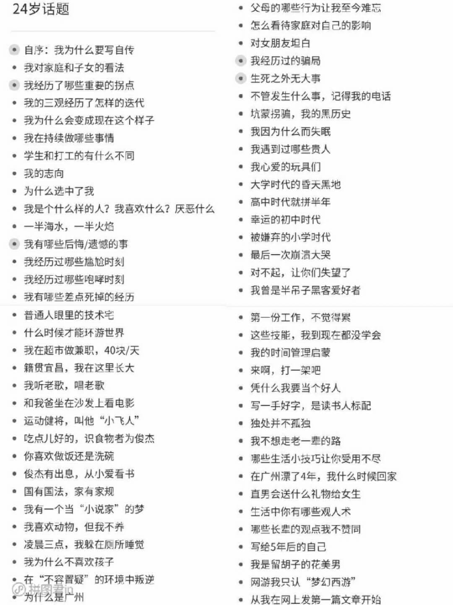
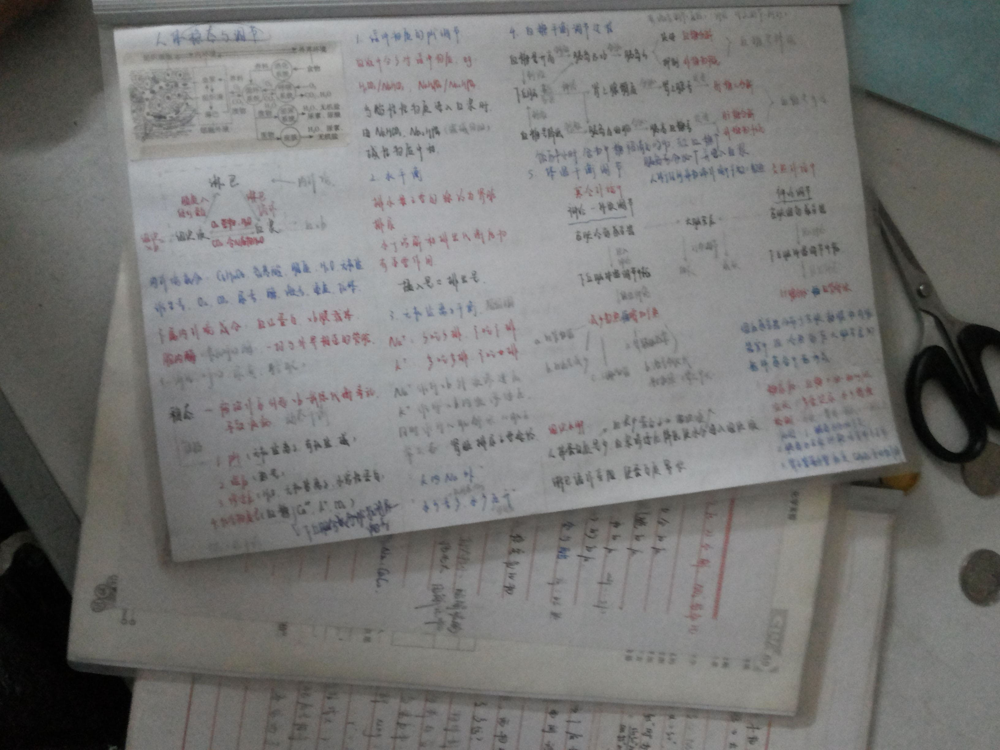

4.你希望通过时间记录获得什么
我曾经在朋友圈问大家，“你坚持时间记录是想因此而收获什么？”
大家的回答总结出来大概是这4条：
- 希望知道自己的时间花在哪了
- 想通过时间的分配认识自己
- 想通过时间记录让自己更高效更自律
- 想拥有数据化指标的参考
要我说，时间记录是一种帮你重建生活秩序的方法。
坚持时间记录你就能：
- 拥有“长跑思维”，不仅活在当下，也着眼未来
- 建立生活秩序，增强掌控感，减少焦虑和混乱
- 通过真实的数据，发现自己的兴趣爱好
- “看见”你的成长和改变
- 磨练你的耐心，体验水滴石穿的力量
老话说“学如逆水行舟，不进则退”，生活也是一样，你不主动规划，就会被生活推着走。
柳比歇夫时间记录法非常适合：
- 有珍惜时间意识的同学，想知道自己的时间去哪儿了
- 想和时间成为朋友，更好更快达成目标的同学
- 想为世界留下点儿什么，甚至写一本自己的《史记》的同学
- 迷茫，不知道自己是谁又可以成为谁，希望更了解自己的同学
- 数据极客，痴迷量化，喜欢和数据打交道的同学
时间记录就是自己的一杆秤，不是放心里那种，而是拿到台面上量化，说一不二。
很多大佬都在不同场合推荐过“记录”，时间记录除了利用数据帮助我们自省之外，还可以积累和传承，沉淀下的数据可以让你拥有“时间旅行”的能力，迅速“回到”当天。
利用积攒的时间记录，我写成了自己人生的第一本自传。

也就是说，除了帮助你找到时间黑洞之外，时间记录还能辅助你改变行为，帮你留下人生经验，如果你希望认清自己，如果你觉得对生活失去了控制，不知道从哪儿重新开始，不妨试试“时间记录”。
相信我，你的人生一定会变得不一样！
就像我22岁那年，做普鲁斯特问卷的时候，里面有个问题。
你认为自己最伟大的成就是什么？
我当时的回答是“高考笔记”。

我的回答居然是“高考笔记”？
26岁，我做普鲁斯特问卷的时候，再次回答这个问题。
你认为自己最伟大的成就是什么？
我写的是，“时间记录2万小时，一日未断。”
带动更多人开始时间记录，甚至创建一座时间数据博物馆，想想就很激动呢！
那你呢，到今天为止，你觉得自己人生中最伟大的成就是什么？